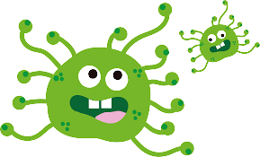

Gejala awal infeksi virus Corona bisa menyerupai gejala flu, yaitu demam, pilek, batuk kering, sakit tenggorokan, dan sakit kepala. Setelah itu, gejala dapat hilang dan sembuh atau malah memberat. Penderita dengan gejala yang berat bisa mengalami demam tinggi, batuk berdahak bahkan berdarah, sesak napas, dan nyeri dada. Gejala-gejala tersebut muncul ketika tubuh bereaksi melawan virus Corona. Gejala-gejala Corona ini umumnya muncul dalam waktu 2 hari sampai 2 minggu setelah penderita terpapar virus Corona. Sebagian pasien yang terinfeksi virus Corona bisa mengalami penurunan oksigen tanpa adanya gejala apapun. Kondisi ini disebut happy hypoxia. Guna memastikan apakah gejala-gejala tersebut merupakan gejala dari virus Corona, diperlukan rapid test atau PCR.
Ada dugaan bahwa virus Corona awalnya ditularkan dari hewan ke manusia. Namun, kemudian diketahui bahwa virus Corona juga menular dari manusia ke manusia. Seseorang dapat tertular COVID-19 melalui berbagai cara, yaitu: • Tidak sengaja menghirup percikan ludah (droplet) yang keluar saat penderita COVID-19 batuk atau bersin • Memegang mulut atau hidung tanpa mencuci tangan terlebih dulu setelah menyentuh benda yang terkena cipratan ludah penderita COVID-19 • Kontak jarak dekat dengan penderita COVID-19 Virus Corona juga bisa menular melalui benda-benda yang sering disentuh, misalnya uang, gagang pintu, atau permukaan meja. Virus Corona dapat menginfeksi siapa saja, tetapi efeknya akan lebih berbahaya atau bahkan fatal bila terjadi pada orang lanjut usia, ibu hamil, orang yang memiliki penyakit tertentu, perokok, atau orang yang daya tahan tubuhnya lemah, misalnya pada penderita kanker.
Belum ada obat yang benar-benar efektif untuk mengatasi infeksi virus Corona atau COVID-19. Pilihan pengobatan akan disesuaikan dengan kondisi pasien dan tingkat keparahannya. Beberapa pasien dengan gejala ringan atau tanpa gejala akan di sarankan untuk melakukan protokol isolasi mandiri di rumah sambil tetap melakukan langkah pencegahan penyebaran infeksi virus Corona. Selain itu, dokter juga bisa memberikan beberapa beberapa langkah untuk meredakan gejalanya dan mencegah penyebaran virus corona, yaitu: Merujuk penderita COVID-19 yang berat untuk menjalani perawatan dan karatina di rumah sakit rujukan, Memberikan obat pereda demam dan nyeri yang aman dan sesuai kondisi penderita, Menganjurkan penderita COVID-19 untuk melakukan isolasi mandiri dan istirahat yang cukup, Menganjurkan penderita COVID-19 untuk banyak minum air putih untuk menjaga kadar cairan tubuh.